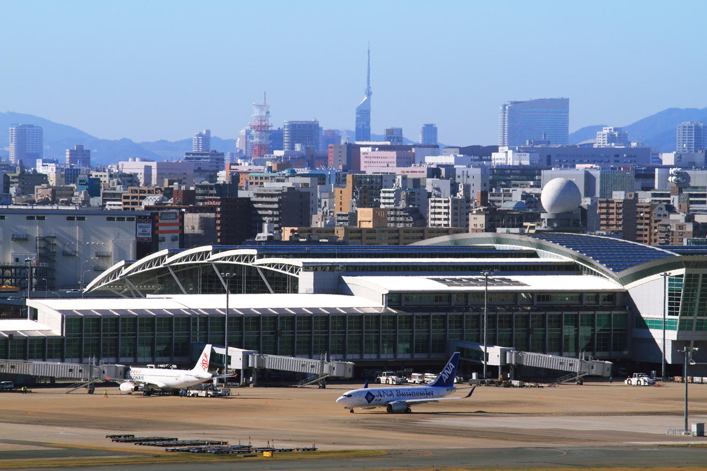
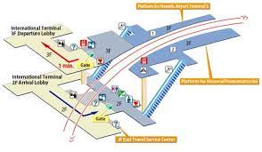
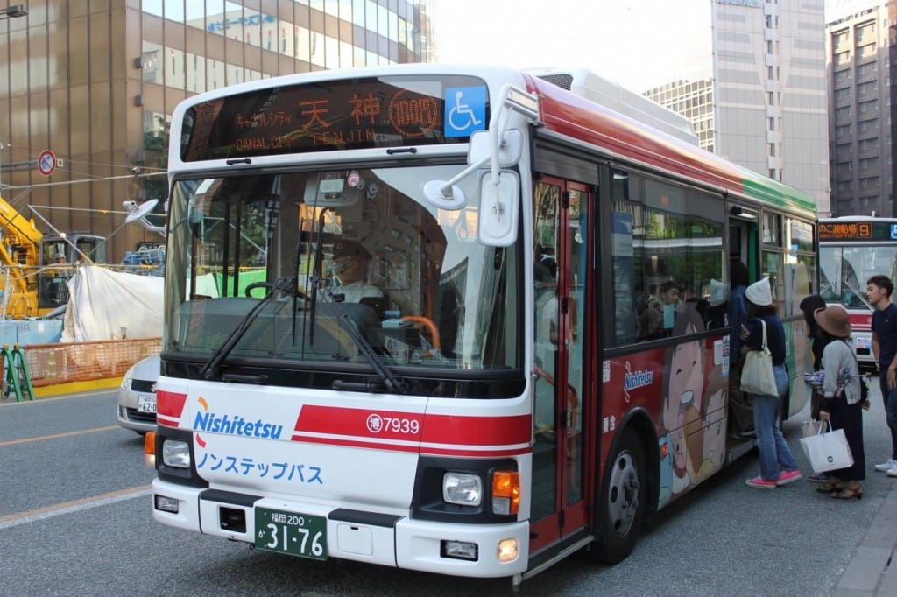
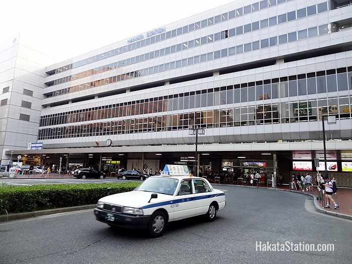

De los aeropuertos de Japón, este es el cuarto más frecuentado, recibiendo a más de 20 millones de personas al año. Este aeropuerto es de segunda categoría y cuanta con una sola pista, sin embargo es muy transitada, convirtiéndola en la pista única más
concurrida del mundo. El Aeropuerto de Fukuoka se ubica en Hakata-ku y se encuentra en medio de una zona poblada rodeado de residencias, por lo que el aeropuerto solamente opera en horario de 7 am a 10 pm para permitir a los
residentes descansar con tranquilidad, evitando mayores exigencias.

GUÍA del PASAJERO
Fukuoka es la ciudad más grande y el punto de acceso a toda la isla meridional de Kyushu , que goza de una gran vida cultural y actividad geológica.
El Aeropuerto de Fukuoka (福岡空港; Fukuoka Kūkō) (IATA: FUK, OACI: RJFF), anteriormente conocida como Base Aérea Itazuke, es un aeropuerto internacional en Fukuoka, Japón. Está considerado como un aeropuerto de segunda categoría. Opera
a plena capacidad, y no puede ampliarse más. Los vuelos dejan de operarse a las 10 p.m. para permitir a los residentes algo de paz y tranquilidad, comenzando de nuevo a las 7 a.m. El aeropuerto se encuentra en Hakata-ku, al sureste
de esta. El Aeropuerto de Fukuoka es el cuarto con más movimiento de pasajeros de Japón. En 2006, fue utilizado por 18,1 millones de personas y se produjeron 137.000 operaciones.1 Solo hay una pista de 2800 metros, que fue construida
para turbohélices. El aeropuerto está rodeado por áreas residenciales y la aproximación al aeropuerto se asemeja a la que tenía el Aeropuerto Internacional Kai Tak. A mediados de los noventa, Delta Air Lines efectuó un vuelo directo
entre Fukuoka y Portland, Oregon, donde la aerolínea tuvo en un tiempo su base de operaciones transpacífica. Cuando la ruta fue cancelada debido a la presión fiscal, Fukuoka perdió su única ruta directa a los Estados Unidos.
El Aeroupuerto Internacional Fukuoka se localiza en 778-1 Shimousui, Hakata Ward, Fukuoka, 812-0003, Japón
Mapa Aeropuerto Internacional de Fukuoka
<
¿Cómo llegar?
Ruta al aeropuerto desde la estación Fukuoka-kuko (aeropuerto) (metro de la ciudad de Fukuoka) Después de llegar a la estación Fukuoka-kuko (aeropuerto), los clientes que acudan al mostrador de ANA deben dirigirse al primer piso, mientras que aquellos
clientes que utilicen el servicio SKiP y PREMIUM CHECK-IN deberán dirigirse al segundo piso.
Inicio del funcionamiento del nuevo salón de espera de autobuses a partir del 30 de enero de 2020 Los clientes que salgan desde el nuevo salón de autobuses (puertas de embarque 81 y 82) deben utilizar el punto de control de seguridad
del sur.

Transporte
- Autobuses: En el Aeropuerto de Fukuoka los autobuses están disponibles desde la parada del terminal internacional y nacional.

-
Taxis: En la actualidad el Aeropuerto de Fukuoka cuenta con taxis en la parada de cada terminal. Están disponibles todo el tiempo. Para más información, por favor contactarse con Fukuoka City Taxi Association al teléfono: 092 434 5100.

Conoce el Aeropuerto de Narita
La céntrica ubicación del aeropuerto de Fukuoka te permite llegar hasta Hakata, el corazón de la ciudad de Fukuoka, en tan solo 5 minutos en tren después de recoger el equipaje
Fukuoka es la ciudad más grande y el punto de acceso a toda la isla meridional de Kyushu , que goza de una gran vida cultural y actividad geológica.